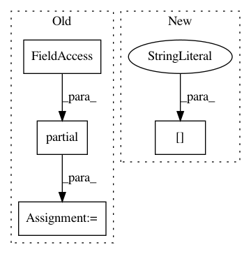

7db45bfb7b7486e08faa6c29f1e2600159151c1d,src/models.py,PyTorchUNet,__init__,#PyTorchUNet#Any#Any#Any#,47
Before Change
**architecture_config["optimizer_params"])
dice_loss = partial(multiclass_dice_loss,
excluded_classes=[0])
loss_function = partial(mixed_dice_cross_entropy_loss,
dice_loss=dice_loss,
cross_entropy_loss=multiclass_segmentation_loss)
self.loss_function = [("mask", loss_function, 1.0)]
self.callbacks = callbacks_unet(self.callbacks_config)
def fit(self, datagen, validation_datagen=None, meta_valid=None):
After Change
class PyTorchUNet(Model):
def __init__(self, architecture_config, training_config, callbacks_config):
super().__init__(architecture_config, training_config, callbacks_config)
self.activation_func = self.architecture_config["model_params"]["activation"]
self.set_model()
self.set_loss()
self.weight_regularization = weight_regularization_unet
self.optimizer = optim.Adam(self.weight_regularization(self.model, **architecture_config["regularizer_params"]),
In pattern: SUPERPATTERN
Frequency: 3
Non-data size: 4
Instances
Project Name: minerva-ml/open-solution-data-science-bowl-2018
Commit Name: 7db45bfb7b7486e08faa6c29f1e2600159151c1d
Time: 2018-07-09
Author: taras.piotr@gmail.com
File Name: src/models.py
Class Name: PyTorchUNet
Method Name: __init__
Project Name: tensorflow/tensorboard
Commit Name: b22234caeebb179a8bf7ae379d70843fe3157afd
Time: 2017-11-28
Author: nfelt@users.noreply.github.com
File Name: tensorboard/plugins/core/core_plugin.py
Class Name: CorePlugin
Method Name: get_plugin_apps
Project Name: QUANTAXIS/QUANTAXIS
Commit Name: d39a96438f653fca7882ae558bf84f103b835f0b
Time: 2020-12-20
Author: nehcuh@szu.edu.cn
File Name: QUANTAXIS/QAFactor/data.py
Class Name: DataApi
Method Name: get_groupby